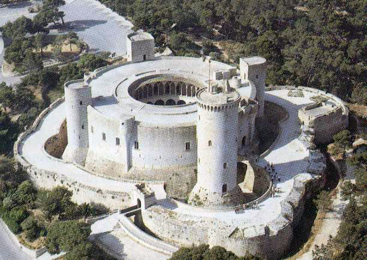

El castillo de Bellver es una fortificación de estilo gótico situada a unos tres kilómetros de la ciudad española de Palma de Mallorca, en Baleares. Fue construido a principios del siglo XIV por orden del rey Jaime II de Mallorca. Se encuentra sobre un monte de 112 metros sobre el nivel del mar, en una zona rodeada de bosque, desde donde se puede contemplar la ciudad, el puerto, la sierra de Tramuntana y el Llano de Mallorca; de hecho, su nombre viene del catalán antiguo bell veer, que significa «bella vista». Una de sus peculiaridades es que se trata de uno de los pocos castillos de toda Europa de planta circular, siendo el más antiguo de estos. Actualmente pertenece al Ayuntamiento de Palma, y en él se encuentra el Museo de Historia de la ciudad de Palma, por lo que está abierto al público.

El Alcázar de Segovia, que data de principios del siglo XII, es uno de los castillos medievales más característicos del mundo y uno de los monumentos más visitados de España. Su imponente perfil se levanta, majestuoso, sobre el valle del Eresma y es símbolo de la Ciudad vieja de Segovia, declarada Patrimonio Mundial de la Unesco en 1985.
Palacio y fortaleza de los Reyes de Castilla, su traza refleja el esplendor de la Corte durante el medievo, y sus muros han sido testigos de batallas, intrigas palaciegas, bodas reales y sucesos asombrosos. En su ya bimilenaria existencia, el Alcázar ha sido castro romano, fortaleza medieval, palacio real, custodio del tesoro real, prisión de estado, Real Colegio de Artillería y Archivo General Militar.